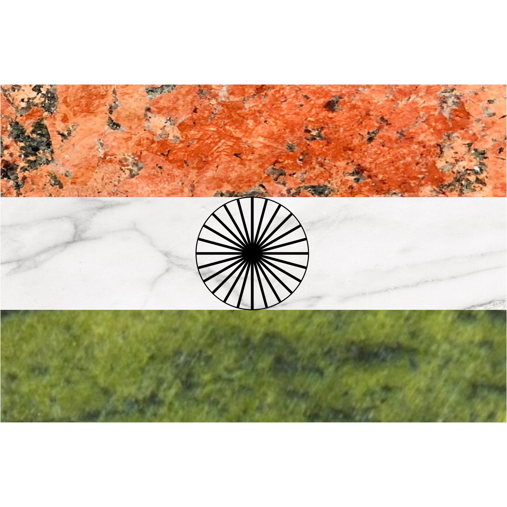

<html lang="en">
<head>
    <meta charset="UTF-8">
    <meta name="viewport" content="width=device-width, initial-scale=1.0">
    <link rel="icon" type="image/x-icon" href="assets/favicon.png">
    <link href="https://cdn.jsdelivr.net/npm/bootstrap@5.0.2/dist/css/bootstrap.min.css" rel="stylesheet" integrity="sha384-EVSTQN3/azprG1Anm3QDgpJLIm9Nao0Yz1ztcQTwFspd3yD65VohhpuuCOmLASjC" crossorigin="anonymous">
    <link rel="stylesheet" type="text/css" href="assets/colors.css">
    <link rel="stylesheet" href="https://cdnjs.cloudflare.com/ajax/libs/font-awesome/6.5.1/css/all.min.css" integrity="sha512-DTOQO9RWCH3ppGqcWaEA1BIZOC6xxalwEsw9c2QQeAIftl+Vegovlnee1c9QX4TctnWMn13TZye+giMm8e2LwA==" crossorigin="anonymous" referrerpolicy="no-referrer" />
    <!--<style>
        a:hover{
            color: #ffffff;
            background-color: #0000ff;
        }
        a:active{
            color: #0000ff;
        }
    </style>-->
</head>
<style>
    body, html {
        max-width: 2000px;
        margin: auto;
    }
    .funding-logo{
        height: 150px;
        width: auto;
    }

    @media screen and (max-width: 780px) {
    .funding-logo {
        height: 60px;
        width: auto;
    }
}

    @media screen and (min-width: 780px) and (max-width: 960px) {
    .funding-logo {
        height: 100px;
        width: auto;
    }
}

</style>
<body>
    <script src="https://cdn.jsdelivr.net/npm/bootstrap@5.0.2/dist/js/bootstrap.bundle.min.js" integrity="sha384-MrcW6ZMFYlzcLA8Nl+NtUVF0sA7MsXsP1UyJoMp4YLEuNSfAP+JcXn/tWtIaxVXM" crossorigin="anonymous"></script>
    <script src="https://static.elfsight.com/platform/platform.js" data-use-service-core defer></script>
</body>
</html>

<!--header-->
<!--good image for a top row thing in the main page-->
<div class="row primary-theme" style="margin-left: auto; margin-right: auto;">
    <div class="col-2">
            
    </div>
    <div class="col justify-content-center pt-4">
        <h1 class="text-center header-font primary-theme">
            APPLIED STRUCTURAL GEOLOGY GROUP
        </h1>
    </div>
    <div class="col-2">
             
    </div>
</div>


<!--navbar-->
<!--https://youtu.be/qNifU_aQRio-->
<!--Check for how to customize/create the navigation bar-->
<!--Watch the end of the video to add a Search button to the top of the page-->
<nav class="navbar navbar-light sticky-top bg-light navbar-expand-md"> <!--sticky-top sticks the navbar to the very top of the page-->
    <a href="index.html" class="navbar-brand h1 d-md-none">
        <i class="mx-2 fa-solid fa-house-chimney primary-atn"></i>
    </a>
    <button type="button" data-bs-toggle="collapse" data-bs-target="#navbarNav" class="navbar-toggler" aria-controls="navbarNav" aria-expanded="false" aria-label="Toggle navigation">
        <i class="mx-2 fa-solid fa-bars primary-atn"></i>
    </button>
    <div class="collapse navbar-collapse" id="navbarNav"> <!--navbarNav is a variable to be used in the data-target-->
        <ul class="navbar-nav mx-auto">
            <li class="nav-item px-4 d-md-block">
                <a href="index.html" class="nav-link active" style="color:#00876c">
                    Home
                </a>
            </li>
            <li class="nav-item active px-4">
                <a href="pages/Amar.html" class="nav-link">
                    About me
                </a>
            </li>
            <li class="nav-item active px-4">
                <a href="pages/team.html" class="nav-link">
                    People
                </a>
            </li>
            <li class="nav-item active px-4">
                <a href="pages/publications.html" class="nav-link">
                    Publications
                </a>
            </li>
            <li class="nav-item active px-4">
                <a href="pages/research.html" class="nav-link">
                    Projects
                </a>
            </li>
            <!--<li class="nav-item active px-4">
                <a href="pages/gallery.html" class="nav-link">
                    Gallery
                </a>
            </li>-->
        </ul>
    </div>
</nav>

<!--main content-->
<div class="my-3 mx-1 row justify-content-center">
    <div class="justify-content-center quote-box">
        <p class="mx-2 my-2 quote">
            <i>ॐ असतोमा सद्गमय । <b> तमसो मा ज्योतिर्गमय। </b> मृत्योर्मामृतं गमय ।। ॐ शान्ति शान्ति शान्तिः ।। </i>
            <p style="font-size: 22px; font-family: 'Times New Roman', Times, serif; color: #00876c; text-align: end;">
                -बृहदारण्यक उपनिषद् 1.3.28.
            </p>
        </p>
    </div>
</div>


<div class="row mx-1 justify-content-center">
    <div class="col-12 mb-3 my-2 justify-content-center" style="background-color: #00876c; padding-top: 10px; padding-bottom: 9px;">
        
        <h5 class="about-the-group justify-content-center" style="text-align: center; color: #ffffff;">
            About the Group
        </h5>
        <p class="mt-1 about-the-group-det" style="color: #ffffff;">
            Structures and deformation are critical to understanding the behavior under stress. While slow deformation relates to tectonics, fast deformation is seen in the case of impact craters, landslides and supershears. In a meteoritic impact, shock waves cause intense deformation at gigapascal peak pressures and extremely high strain rates. The applied structural group, led by <u><a href="pages/Amar.html" style="text-decoration: none; color: white;"> Dr. Amar Agarwal</a></u>, investigates this deformation. We use standard techniques such as field studies, microstructural analysis, and rock magnetic investigations (magnetic mineralogy, magnetic fabrics, and palaeomagnetism). This is coupled with various innovative investigative techniques like high-speed deformation experiments, mathematical modelling and hydrocode simulations. Our group has been working on problems of tectonic and structural evolution, and of high-speed deformation due to natural and other shock waves.
        </p>
    </div>
</div>

<div class="row mx-1 justify-content-center">
    <h4 class="p-1 text-center secheader-font primary-theme">
        A couple of high speed impact experiments on Maggia Gneiss
    </h4>
</div>
<div class="row justify-content-center">
    <video src="assets/Deformation in the subsurface of experimental impact craters.mp4"controls style="width: 80%; height: auto;" alt=""></video>
</div>
<div class="row justify-content-center">
    <div class="col-10 col-lg-10 col-md-8 justify-content-center">
        <h4 class="mx-3 pt-2 text-center secheader-font" style="color: #000000;">
            Two‐stage space light‐gas gun at EMI accelerated 5mm, 0.177g Al spherical projectiles to 7.236 and 6.925 km/s for the experiments.
        </h4>
    </div>
</div>
<div class="row mx-1 justify-content-center">
    <h4 class="mt-2 mb-2 p-1 text-center secheader-font primary-theme">
        2D hydrocode simulation of high speed impact experiment on Quartzite
    </h4>
</div>
<div class="row justify-content-center">
    <video src="assets/ISALE.mp4" controls style="width: 80%; height: auto;" alt="">
</div>
<div class="row justify-content-center">
    <div class="col-10 col-lg-10 col-md-8 justify-content-center">
        <h4 class="mx-3 pt-2 text-center secheader-font" style="color: #000000;">
            Basalt spherical projectile of diameter 6.18mm and weighing 0.3690g was accelerated to 5.457 km/s.
        </h4>
    </div>
</div>

<div class="row mx-1 justify-content-center">
    <h4 class="mt-2 mb-2 p-1 text-center secheader-font primary-theme">
        Funding Sources
    </h4>
</div>
<div class="my-3 mx-1 row justify-content-center">
    <div class="row justify-content-center">
        <div class="row justify-content-center" style="padding-bottom: 20px;">
            
            
            
            
            
            
            
            
            
        </div>
    </div>
</div>

<!--footer-->
<div class="row primary-theme justify-content-center" style="margin-left: auto; margin-right: auto;">
    <p class="text-center my-1" style="font-family: 'Times New Roman', Times, serif;">
        &copy; 2024, <a href="https://swastiksumanbehera.github.io/" target="_blank" style="color: white;">Swastik Suman Behera</a>&nbsp;
        <a href="https://github.com/swastiksumanbehera" target="_blank"><i class="fa-brands fa-github primary-atn"></i></a>
    </p>
</div>